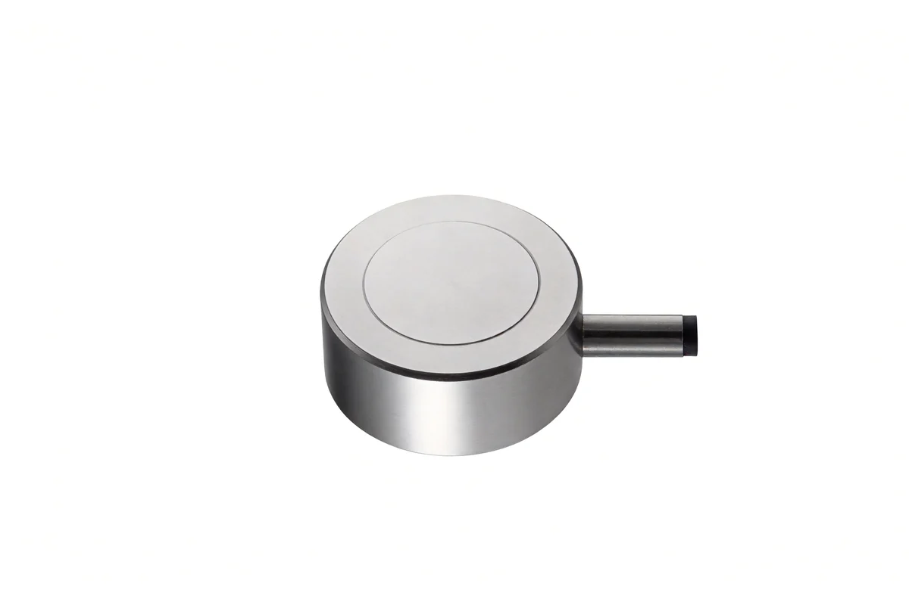
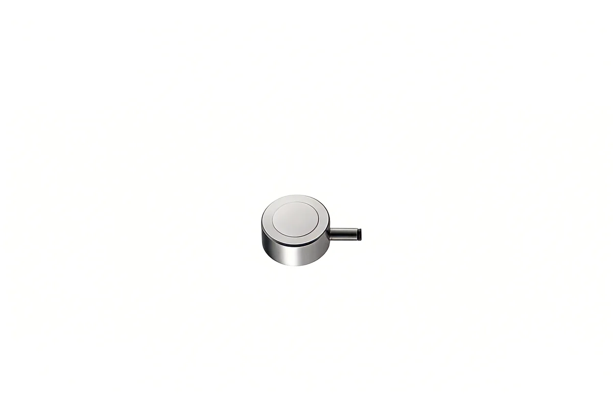
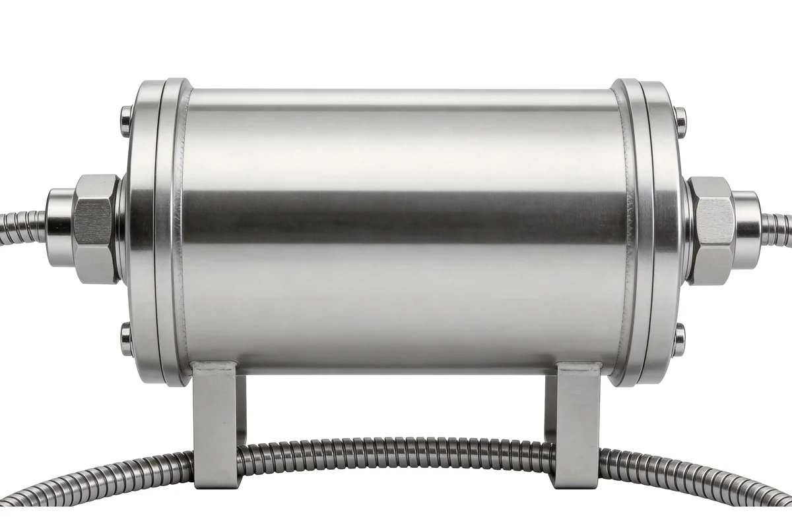
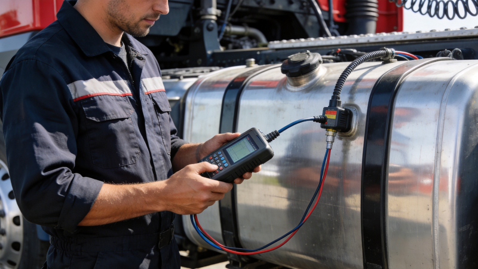

AXLTeco fournit des capteurs de niveau de carburant capacitifs et ultrasoniques avec une précision de ±1 %, acquisition temps réel, alertes de vol/fuite et analyse croisée kilométrage-carburant — maîtrise fine des coûts de carburant des flottes logistiques, engins de chantier et véhicules miniers.
Précision ±1 %
Technologies capacitive et ultrasonique, ±1 % sur toute la plage, résolution 0,1 mm.
Transmission 4G temps réel
Données carburant envoyées au cloud à la seconde, supervision à distance et historique.
Alertes d'anomalie
Alertes SMS/appli en temps réel contre vol, fuite et consommation anormale.
Analyse km-carburant
Croisement automatique kilométrage et carburant, rapports aux 100 km pour optimiser la planification.
Conception antifraude
Détection d'arrachement, transmission chiffrée et reconnaissance intelligente des anomalies.
Cache local
Stockage ≥7 jours hors ligne, renvoi automatique au retour du réseau.
Sélection de modèle
Les capteurs de niveau s’organisent par liquide mesuré et type de réservoir, ce qui détermine le point d’installation et la méthode de mesure.

Contrôle du niveau de carburant véhicule
- Mesure continue du niveau de réservoir avec supervision à distance
- Montage sur réservoir et détection d’anomalies de remplissage

Contrôle de niveau de réservoir
- Mesure de niveau pour citernes et réservoirs en transport de matières dangereuses
- Montage en haut de citerne avec supervision du transport

Niveau d’eau et autres liquides
- Mesure de niveau pour réservoirs d’eau et liquides non carburants
- Montage sur paroi externe pour fluides non carburants
Interfaces et Compatibilité
Intégration approfondie avec terminaux GPS et plateformes de flotte pour l'analyse croisée carburant-position.
Interfaces physiques
- RS-485
- Alimentation DC 9–36 V
- Antenne 4G (option)
- Sortie analogique (option)
Protocoles
- Modbus RTU
- Protocole propriétaire
- JT/T 808 (via terminal GPS)
- MQTT (option)
Plateformes compatibles
- Cloud de gestion de flotte
- Système d'analyse carburant
- ERP/MES
- TMS tiers
Liaisons de données
- Liaison terminal GPS
- Corrélation kilométrage
- Comparaison des pleins
- Intégration dispatch
Solutions d'Application
IBMS
Plateforme de gestion intégrée des bâtiments pour une surveillance et un contrôle unifiés.
Valeur Principale:
- Interconnexion système
- Réduction coûts
- Amélioration gestion
Système de Tableau de Bord
Visualisation de données en temps réel avec intégration multi-sources et rapports personnalisés.
Valeur Principale:
- Visibilité données
- Support décision
- Transparence opérationnelle
Système de Gestion des Matériaux

Gestion numérique des entrées, sorties, inventaire et alertes de stock.
Valeur Principale:
- Visibilité stocks
- Pertes réduites
- Rotation améliorée
Solutions d'Application
Capteur de Consommation de Carburant peut être intégré en profondeur avec les systèmes logiciels et solutions sectorielles AXLTeco pour délivrer une valeur synergique.
Systèmes Logiciels
Système de Gestion des Matériaux
Gestion numérique des entrées, sorties, inventaire et alertes de stock.
Valeur Principale:
- Visibilité stocks
- Pertes réduites
- Rotation améliorée
Avantages et garantie
Compatible avec les Marques Principales
Équipements compatibles avec Hikvision, Dahua, ZKTeco et autres marques principales, supportant ONVIF, GB/T 28181 et autres protocoles standard.
Service Clé en Main
De la conception de solution, sélection d'équipements, installation et mise en service à la maintenance après-vente, service clé en main sur tout le cycle de vie.
Support Local en Afrique
Équipes de service local au Nigeria et dans d'autres régions, fournissant support technique, approvisionnement pièces de rechange et maintenance sur site.
Maintenance Réactive
Support technique à distance 7j/7 24h/24, ingénieurs locaux sur site dans les 48 heures pour les pannes urgentes.